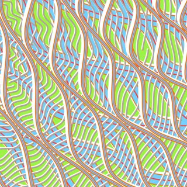

Art Blocks: the code and the token's seed are on-chain; the record, preview and live view come from Art Blocks' servers — these are our copies.
2 works · 6 files: for each work our copies of its record, its image (the preview) and its live view (the page that draws the art in a browser), each pinned at Pinata and Filebase and archived in S3. The code libraries the live views load are kept the same way. A marketplace reading the token's address goes to Art Blocks' servers, not to these copies; the copies keep the record, preview and live view if those servers stop, and their fingerprints are in the public list (see how these works are kept and proven). Artists are credited as the works' own records name them.

0xa7d8d9ef8d8ce8992df33d8b8cf4aebabd5bd270bafkreiamiggv7hg6o75jha6mblxytdwqphy5vcoyzr34php6nlunl44z3u gateway.pinata.cloud · ipfs.filebase.io · c-ipfs-gw.nmkr.io — 2026-11-15 · pinned at Pinata and Filebase, archived in S30c418d5f9cde77fa9383cc0aef898ed079f1da89d8cc77c79dfe6ae8d5f399dd · 3,159 byteshttps://api.artblocks.io/token/102000294bafybeig57hl4t3zohg5o3bmbtgbzb5iit4vdrduk3blei3mhnbcvrp7h4i gateway.pinata.cloud · ipfs.filebase.io · c-ipfs-gw.nmkr.io — 2026-11-15 · pinned at Pinata and Filebase, archived in S3e688fac207154cfebeaeb5f3f7f5ee5c74e3db7a1548bc632477614b7bac3192 · 3,836,384 byteshttps://media-proxy.artblocks.io/1/0xa7d8d9ef8d8ce8992df33d8b8cf4aebab…bafkreida4bof36hg7o3ku47xfx2ois6oyua4d7fzstkyquutvl4drgd6xm gateway.pinata.cloud · ipfs.filebase.io · c-ipfs-gw.nmkr.io — 2026-11-15 · pinned at Pinata and Filebase, archived in S360e05c5df8e6fbb6aa73f72df4e44bcec501c1fcb994d5885293aaf838987ebb · 4,616 byteshttps://generator.artblocks.io/1/0xa7d8d9ef8d8ce8992df33d8b8cf4aebabd5…0xa7d8d9ef8d8ce8992df33d8b8cf4aebabd5bd270bafkreibhhysrqsjkty4t2duukegtltjcbosvcmbgh6r2w4rokxpwen4j2e gateway.pinata.cloud · ipfs.filebase.io · c-ipfs-gw.nmkr.io — 2026-11-15 · pinned at Pinata and Filebase, archived in S3273e2518492a9e393d0e94510d35cd220ba55130263fa3ab722e55df623789d1 · 3,165 byteshttps://api.artblocks.io/token/102000745bafybeicppahzylozmjptahmaekogl6vvnxbqc63nzptwigpy7an3r24774 gateway.pinata.cloud · ipfs.filebase.io · c-ipfs-gw.nmkr.io — 2026-11-15 · pinned at Pinata and Filebase, archived in S316d8bed84998e911ab56a1b679da2d6630c4b5a02cca75f3944ffb6401235462 · 3,448,804 byteshttps://media-proxy.artblocks.io/1/0xa7d8d9ef8d8ce8992df33d8b8cf4aebab…bafkreigpmcz6rhcbxzb7yzph4lplilzsokfwvoxx24x4ipkxqjdvvp5gtu gateway.pinata.cloud · ipfs.filebase.io · c-ipfs-gw.nmkr.io — 2026-11-15 · pinned at Pinata and Filebase, archived in S3cf60b3e89c41be43fc65e7e2deb42f32728b6abaf7d72fc43d5782475abfa69d · 4,616 byteshttps://generator.artblocks.io/1/0xa7d8d9ef8d8ce8992df33d8b8cf4aebabd5…Generated archive pages. Content identifiers point to the public IPFS network.